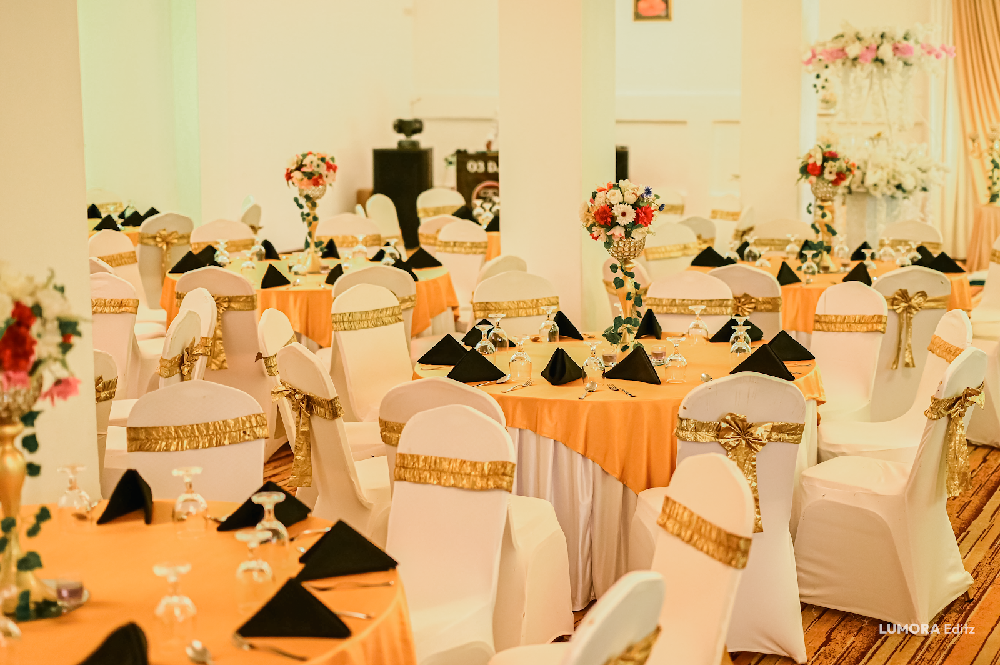
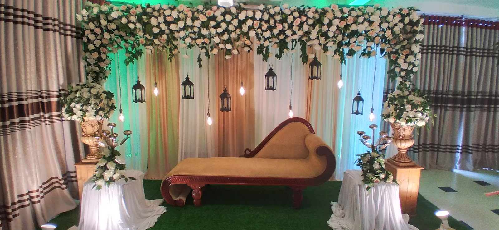
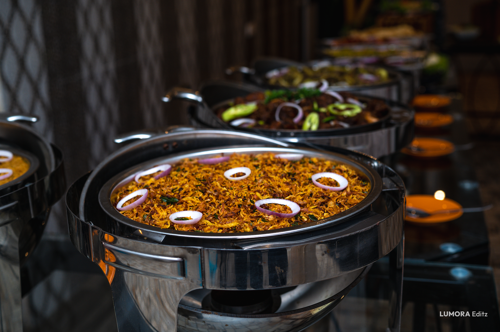
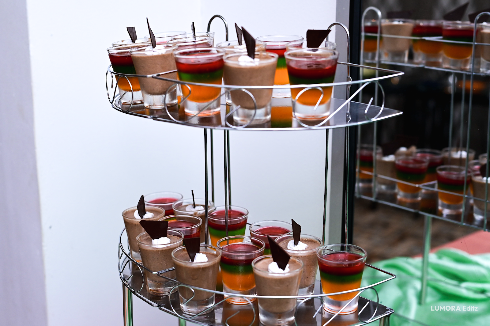
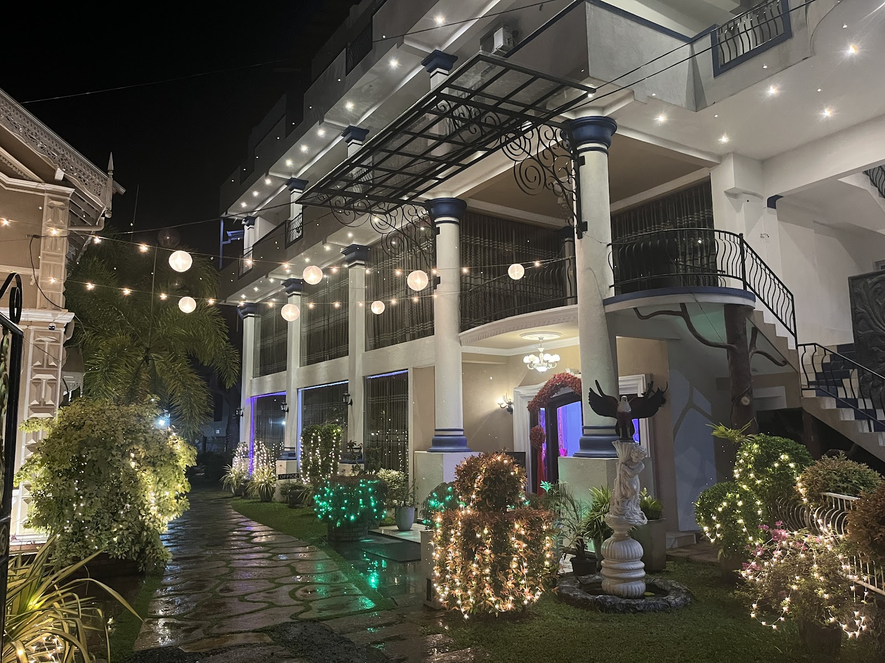
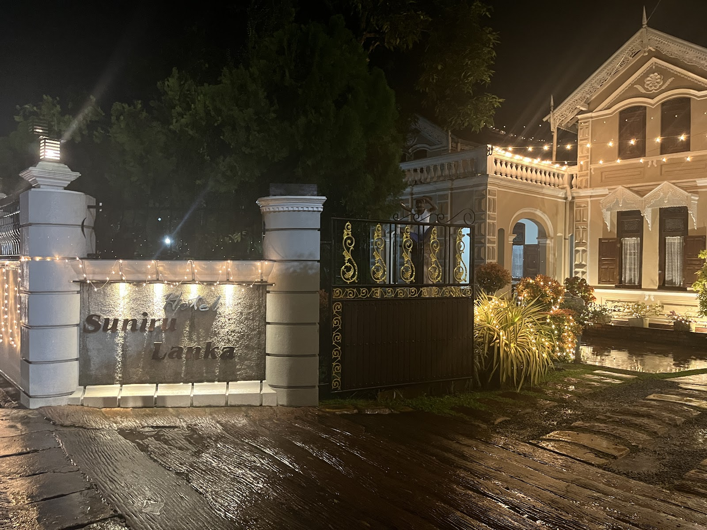
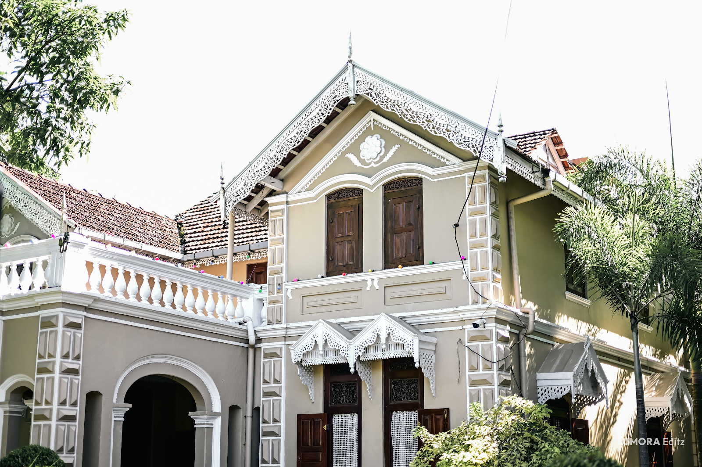
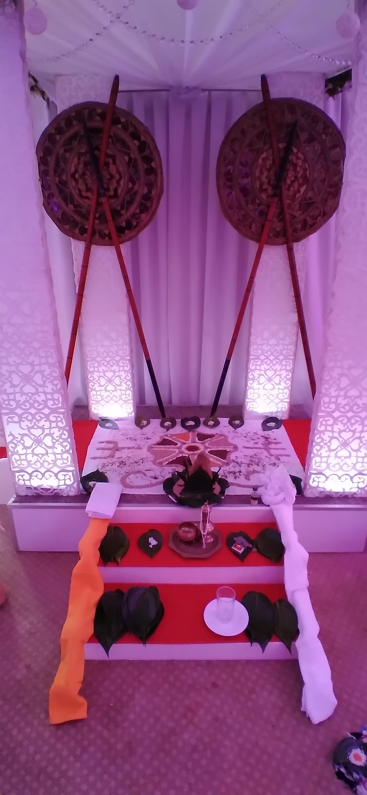
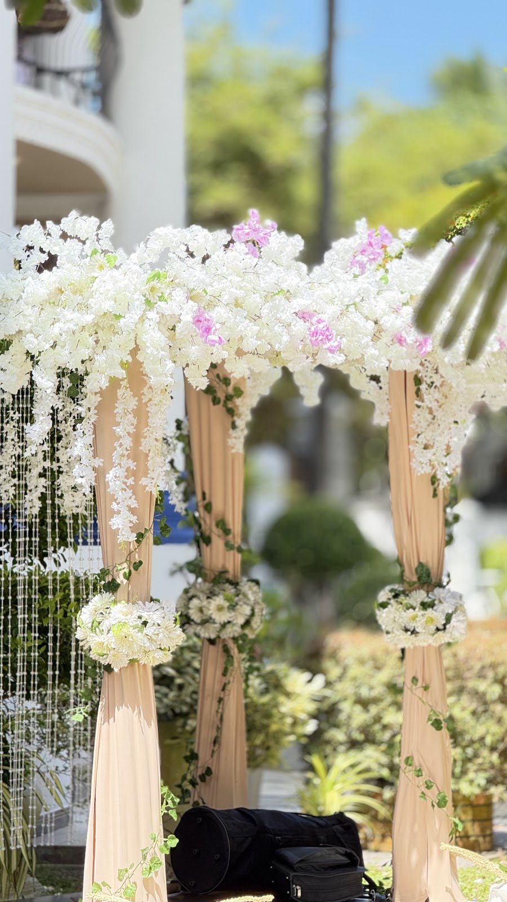
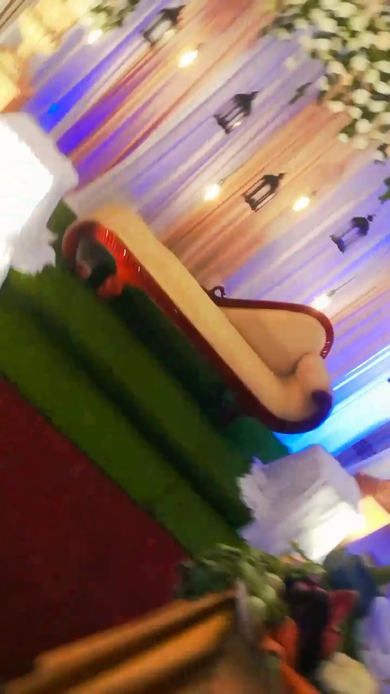

Weddings
A complete setting for your ceremony and reception, with traditional and contemporary arrangements.
A signature venue in the heart of Galle
Weddings, homecomings and meaningful gatherings, brought together with warm hospitality and thoughtful detail.
Makuluwa, Galle
Sri Lanka
Made for moments that matter
Hotel Suniru Lanka is a wedding and reception venue in Makuluwa, Galle, created for celebrations both grand and personal.
From the first welcome to the final dance, the venue brings your day together in one elegant, flexible setting.
See what we host ↗
One venue. Many stories.
A complete setting for your ceremony and reception, with traditional and contemporary arrangements.
Welcome family and friends into a warm, beautifully prepared evening celebration.
Flexible space for birthdays, reunions and milestone moments that deserve more.
A convenient Galle location for professional meetings, office events and group functions.

Everything, beautifully considered
Traditional Poruwa & settee-back arrangements
Decor, head table & ceremonial oil lamp
DJ, live bands & cultural entertainment
Wedding cake, sweet & fruit corners
Champagne fountain arrangements
Air-conditioned VIP lounge
Available facilities and package inclusions may vary. Confirm your preferred arrangement when booking.
Talk to our team ↗A feast for every table
From generous buffet presentations to sweet and fruit corners, catering is part of the complete celebration experience at Hotel Suniru Lanka.
Menu choices, pricing and dietary requirements should be confirmed directly with the venue.
Ask about catering ↗







Venue images sourced from the business’s public Google Maps gallery for this private concept.
Real stories from our celebrations
Verified reviews from couples, families, and organizers who celebrated their landmark occasions at Hotel Suniru Lanka in Makuluwa, Galle.
“We had our dream wedding reception at Hotel Suniru Lanka in Makuluwa. The banquet hall is extraordinarily spacious, beautifully lit, and kept cool with powerful AC. Our guests from Colombo and across Galle cannot stop praising the delicious Sri Lankan buffet—especially the mutton curry, fish ambul thiyal, and the rich watalappan dessert corner. Plus, the ample on-site parking made guest arrival effortless!”
“Our homecoming night was pure perfection! The floral stage, Poruwa, and head table backdrops were breathtaking. The hotel staff and catering team were so friendly and professional, constantly ensuring hot buffet refills and tending to elderly guests with warm Southern hospitality. Top marks for organization, tasty dessert corners, and abundant parking.”
“Organized our regional corporate celebration and dinner for 200 colleagues. The hall acoustics, seating layout, and stage AV setup were impeccable. The Sri Lankan food spread was sumptuous with outstanding spice profiles. Located conveniently right on Circular Road with secure vehicle parking for all attendees. Excellent management.”
“A wonderful family celebration venue in Galle! The team set up custom photo booths and a colorful sweet & fruit corner that both kids and adults adored. The staff treated our family like their own, and the spacious venue allowed children to play safely while adults enjoyed their dinner. Exceptional value and warm memories.”
“Hotel Suniru Lanka is a distinguished venue in Makuluwa. The banquet hall gave our 220 guests ample breathing room, a smooth buffet queue, and a comfortable dance floor. The chef's traditional Sri Lankan curry pots and caramel puddings were exquisite. Parking attendants made entry and exit orderly throughout the night.”
“From the initial date reservation to our final toast, the hotel management was transparent, flexible, and supportive. Every single guest complimented the generous portions, welcoming drinks, fresh fruit carvings, and gracious service. Thank you Hotel Suniru Lanka for giving us the happiest start to our wedding journey!”
A simple path to a celebration that feels effortless.
Tell us the occasion, preferred date and the size of your guest list.
Choose the arrangements, entertainment and finishing touches you need.
Arrive, welcome your guests and enjoy the moment together.
Conveniently located in Galle
Hotel Suniru Lanka
Circular Road, Makuluwa
Galle, Sri Lanka